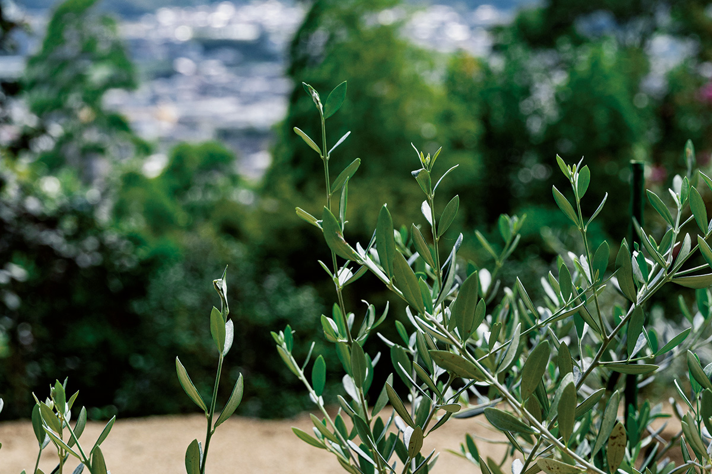
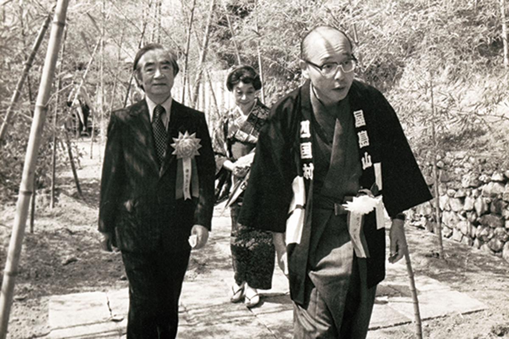
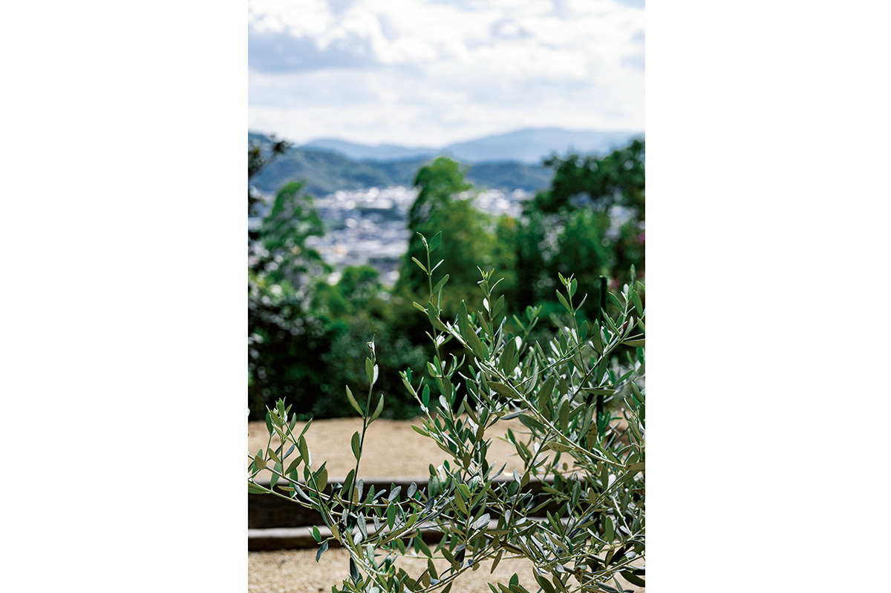
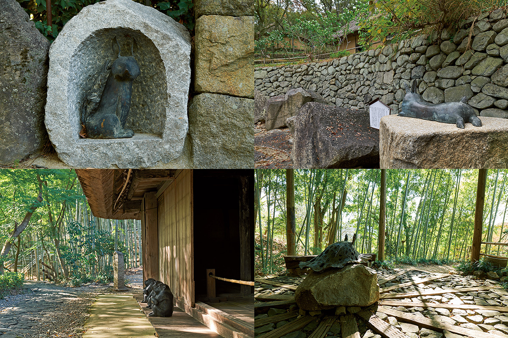

Префектура Кагава · Ясима · Сикоку-мура
Сикоку-мура и художник Гэнъитиро Инокума: эстафета творцов

Идёшь по дорожке в зелени, и глаз ловит перемены: то у беседки за каменной кладкой появится объект, похожий на черепаху, то между домами мелькнёт скульптура. Сикоку-мура с самого начала была пространством, где дышит искусство, и одним из тех, кто поддержал её, был уроженец Кагавы, художник Гэнъитиро Инокума.
Сообщество творцов
Деревня, которую собрали художники
Сикоку-мура с 2019 года входит в число площадок Триеннале Сэтоути. Среди старых домов и подвесного моста-лианы «кадзурабаси» выставляют современное искусство, и это привлекает внимание. Но история связи деревни с художниками намного длиннее.
На церемонии открытия в 1976 году собрались художники, скульпторы, архитекторы и другие известные мастера, среди них Гэнъитиро Инокума и скульптор Масаюки Нагарэ. Нагарэ сам вырезал из камня буддийские изваяния и провёл обряд их освящения. Все они потом не раз возвращались в Сикоку-муру.
Нагарэ, работавший по всему миру и перенёсший мастерскую в Кагаву, был близок с основателем деревни и глубоко участвовал в её создании. В их разговорах родились «Нагарэ-дзака» и водопад «Сомига-таки», ставшие символами места, а работы Нагарэ определили его характер. С Нагарэ в деревню пришли и его друзья: Инокума, с которым он сблизился в Нью-Йорке, и Исаму Ногути. Каменщик из Кагавы, партнёр Ногути, сделал настил сцены и каменную кладку вокруг деревенского театра.
Интерьер удонной «Варая», с которой началась деревня, оформил местный художник, тоже уроженец Кагавы, ставший первым директором Музея народного искусства Сануки. Он же нарисовал рисунок для обёртки сувениров, которой пользуются до сих пор. Стулья и столы «Вараи» сделала местная мебельная мастерская, а большую вывеску «Сикоку-мура» у входа написал каллиграф. В 2002 году появилась «Галерея Сикоку-муры» по проекту Тадао Андо, где хранят и показывают около тысячи предметов из собрания основателя.
Художник, который вдохновлял деревню
Инокума известен и как дизайнер, автор обёрточной бумаги универмага «Мицукоси» «Хана хираку». Он работал в Париже, Нью-Йорке, Токио и на Гавайях, а с основателем деревни познакомился через скульптора Нагарэ.

Инокума, уроженец Кагавы, искренне радовался тому, что появилась Сикоку-мура, «как в детских воспоминаниях», и часто приезжал сюда. В тексте «Живая Сикоку-мура» он писал: «Одно за другим дома с соломенными крышами стоят ярусами на склоне горы, и сделаны они настолько славно, и всё это подлинные вещи, так что ни одно здание не выглядит подделкой; в нашем детстве такие дома стояли повсюду, и ностальгия ещё сильнее».

Он восхищался работой мастеров, которые толсто и ровно подрезали края соломенных крыш, и утешал основателя, потратившего столько сил на поиск этих мастеров. А потом пожелал: «Большой музей под открытым небом, держись!». Именно из этого слова и родилось нынешнее прозвище «Сикоку-мура Миузэам». Инокума, познакомивший деревню с Исаму Ногути и многими другими друзьями, умер в 1993 году, но его любимая олива наблюдает за её новым путём.
Даже одна колонна была от людей, живших до эпохи Мэйдзи, и каждая вещь дышит до сих пор. Хочется погладить их. Хочется сказать этим деревьям: «Долго же ты прожило, молодец», «Хорошим людям ты досталось».
Большой музей под открытым небом, держись!
Гэнъитиро Инокума, «Живая Сикоку-мура», из книги «Музей народного дома. Сикоку-мура»
Искусство продолжается
В рамках Триеннале, помимо выставки Инокумы в «Галерее Сикоку-муры», совместный проект Токийского университета искусств и Школы Чикагского института искусств показал в деревне 23 работы. А объект «Чемодан в бутылке», поплывший по пруду у моста-лианы, стал заметной сенсацией.

В 2022 году «Чемодан в бутылке» выставили в сахарном сарае, появились новые входные ворота «Оянэ-сан» по проекту архитектора и шесть литых работ из серии «Наряженные боги». Четыре работы из этой серии остались в деревне и сегодня.
К Триеннале Сэтоути 2025 в «Галерее Сикоку-муры» прошла выставка «Инокума Гэнъитиро: Форма, Люди, Жизнь. Тайна и красота вокруг нас», приуроченная к трём периодам фестиваля.
Души, ищущие красоту, и сегодня перекликаются здесь сквозь время и показывают новые картины.
Сикоку-мура (музей под открытым небом)
- Адрес
- префектура Кагава, Такамацу, Ясима-Накамати 91
- Телефон
- +81 87-843-3111
- Часы работы
- 9:30–17:00 (приём в деревню и вход в галерею до 16:30)
- Выходные
- вторник (если праздник, то следующий день)
- Вход
- взрослый 2200 иен (2000 при группе от 15 человек), студенты 1000 иен (800), школьники 600 иен (400), младшие школьники бесплатно
- Как добраться
- автобус от станции Котодэн Ясима до остановки «Сикоку-мура»
Фото: Марико Тая, Синго Нитта, Сикоку-мура.